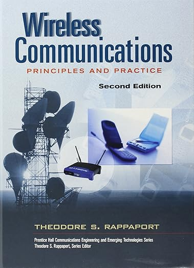
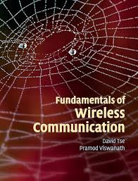
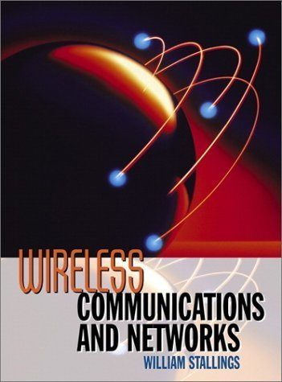

Wireless Communications: Principles and Practice

Συγγραφέας: Theodore S. Rappaport
Περιγραφή: Ένα από τα κλασικά βιβλία στον τομέα των ασύρματων επικοινωνιών. Καλύπτει τα βασικά της θεωρίας και της πράξης, προσφέροντας βαθιά γνώση σε θέματα όπως η διαμόρφωση και η διάδοση του σήματος.
Αρ. Σελίδων: 707
Αξιολόγηση: 4.1 / 5 (66 αξιολογήσεις)
Περισσότερες πληροφορίες
Fundamentals of Wireless Communication

Συγγραφείς: David Tse, Pramod Viswanath
Περιγραφή: Θεωρείται ένα από τα θεμελιώδη βιβλία για τις τεχνικές ασύρματης επικοινωνίας. Εξετάζει θεωρητικά θέματα και τεχνικές, όπως η διαμόρφωση σήματος, τα συστήματα πολλαπλής πρόσβασης, και η αποφυγή παρεμβολών.
Αρ. Σελίδων: 564
Αξιολόγηση: 4.4 / 5 (80 αξιολογήσεις)
Περισσότερες πληροφορίες
Wireless Communications & Networks

Συγγραφέας: William Stallings
Περιγραφή: Το βιβλίο καλύπτει τις βασικές έννοιες και τις τεχνολογίες που απαιτούνται για την κατανόηση των σύγχρονων ασύρματων δικτύων, συμπεριλαμβανομένων των δικτύων κινητής τηλεφωνίας και των WLAN.
Αρ. Σελίδων: 584
Αξιολόγηση: 4.8 / 5 (6 αξιολογήσεις)
Περισσότερες πληροφορίες